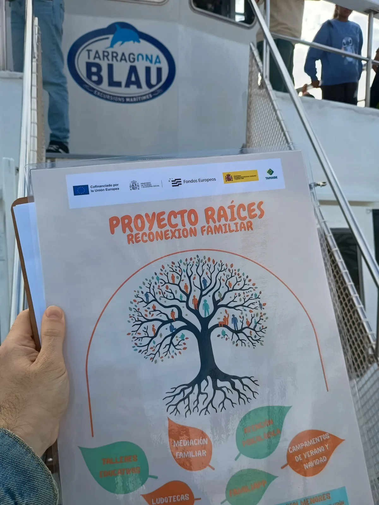

La asociación
Primer año: datos y aprendizajes.
Recogemos los primeros datos de actividad y los aprendizajes para adaptar y reforzar cada intervención. Son datos iniciales, no históricos.
Primeros datos de actividad
+80participantesNiños, niñas y adolescentes vinculados a las actividades del Espai Petit Lleure.
+100actividades al añoPropuestas educativas, creativas, de ocio y de convivencia.
Todo el añoactividad continuadaDurante el curso escolar y en periodos de vacaciones.
TGNterritorio principalTarragona, en esta primera etapa.
Actividad, resultados y aprendizajes
Tres capas del trabajo
Los resultados no se dan igual en todas las personas: por eso no presentamos los objetivos educativos como resultados garantizados.
Actividad · qué hacemosProyectos, sesiones, actividades, acompañamiento y participación.
Resultados · qué observamosAutonomía, participación, relaciones positivas, creatividad y convivencia.
Aprendizajes · qué mejoramosNecesidades detectadas, avances, retorno, adaptaciones y mejoras.
Qué queremos favorecer
Dimensiones de cada intervención
Aprendizaje y desarrollo personalBienestar emocional y convivenciaParticipación y autonomíaFamilias y corresponsabilidadComunidad y territorioInclusión y acceso a oportunidades
Ciclo de mejora
De la necesidad a la mejora
- Detectamos necesidades
- Definimos objetivos
- Desarrollamos la actividad
- Hacemos seguimiento
- Recogemos aprendizajes
- Adaptamos y mejoramos

Nuestro primer proyecto continuado
Espai Petit Lleure
- Actividades educativas con una finalidad clara: juego, creatividad, convivencia y participación.
- Acompañamiento cercano y continuado, también con las familias.
- Aprendizaje progresivo: la observación diaria da forma a las actividades.
En red
Los resultados se construyen en red
Personas participantesSu respuesta nos muestra qué funciona.
FamiliasAportan contexto, necesidades y retorno.
Equipo profesionalObserva, acompaña y ajusta.
Entidades y centrosCoordinación y otros recursos.
AdministracionesConectan necesidades, recursos y objetivos.
¿Hablamos?
¿Quieres conocer mejor los proyectos o construir uno con nosotros?
Hablemos: te presentaremos nuestra manera de trabajar.
Datos inicialesPrimer año de actividad.
SeguimientoBase para los próximos proyectos.
AprendizajeMejora continua.
TransparenciaRendición de cuentas.